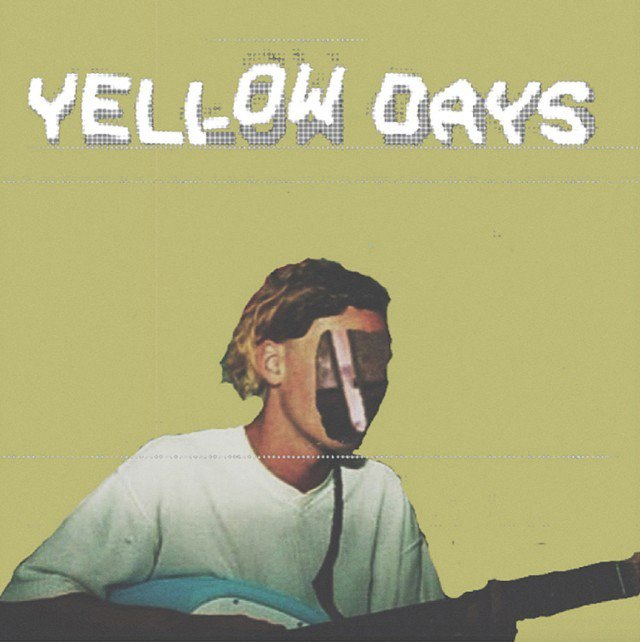
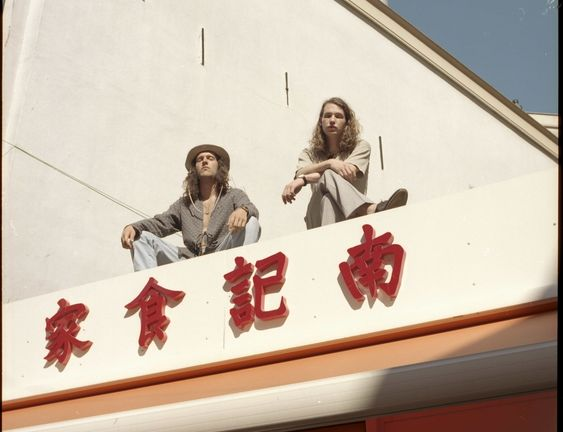
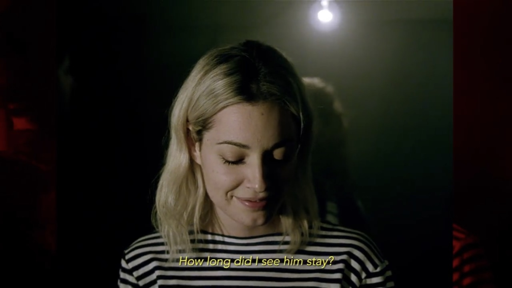

Referencias del género


-Yellow Days-
Con un estilo musical INDIE mezclado con una voz tan desgarradora, Yellow Days escribe sobre su vida y sobre como ha ido descubriendo ese sentimiento que a todos nos suena: El amor. Su estilo te puede recordar a artistas como Mac De Marco o King Krule, artistas bastante destacados en este panorama musical. A Yellow Days no le importan estas comparaciones porque los admira mucho. Sin embargo, una cosa es CLARA y es que YELLOW DAYS ES ÚNICO.
Canciones más escuchadas de Yellow Days:
“A Little While - Yellow Days”
“The Way Things Change - Yellow Days”
“Your Hand Holding Mine - Yellow Days”
Referencias del género

-Feng Suave-
Un dueto recientemente formado por Daniel De Jong y Daniel Leonard Elvis originarios de Ámsterdam, Holanda. Con menos de 24 años, ambos jóvenes se conocen desde su adolescencia y mantienen una amistad muy cercana, sus ideas musicales se empezaron a hacer tangibles después de un concurso de talentos en el cual concursaron, pero no ganaron, aunque después de esa experiencia iniciaron a trabajar juntos.
Canciones más escuchadas de Feng Suave:
“Sink Into The Floor - Feng Suave”
“Honey There´s No Time - Feng Suave”
“Tokind, Dozing - Feng Suave”
Referencias del género
